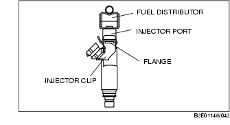

Fuel injector removal/installation [ZY]
- • Fuel is very flammable liquid. If fuel spills or leaks from the pressurized fuel system, it will cause serious injury or death and facility breakage. Fuel can also irritate skin and eyes. To prevent this, always complete the "Fuel Line Safety Procedure", while referring to the "BEFORE SERVICE PRECAUTION". (See BEFORE SERVICE PRECAUTION [ZY].)
- • If there is foreign material on the connecting area of the quick release connector, it might damage the connector or fuel pipe. To prevent this, disconnect the connector and clean the connecting area before connecting.
1. Follow "BEFORE SERVICE PRECAUTION" before performing any work operations to prevent fuel from spilling from the fuel system. (See BEFORE SERVICE PRECAUTION [ZY].)
2. Disconnect the negative battery cable.
3. Remove the air cleaner. (See INTAKE-AIR SYSTEM REMOVAL/INSTALLATION [ZY].)
4. Disconnect the fuel injector connector.
5. Remove in the order indicated in the table.

|
1
|
Quick release connector
|
|
2
|
Fuel distributor
|
|
3
|
Injector clip
(See Injector Clip Removal Note.)
|
|
4
|
Fuel injector
|
|
5
|
Insulator
|
6. Install in the reverse order of removal.
7. Inspect all related parts by performing "AFTER SERVICE PRECAUTION". (See AFTER SERVICE PRECAUTION [ZY].)
Injector Clip Removal Note
-
• If the injector port flange or fuel distributor coated part is damaged, it might cause fuel leakage. To prevent damage, carefully remove the injector clip.

- • Use of a deformed injector clip will cause the fuel injector to be connected incorrectly and could result in fuel leakage. Make sure to replace with a new injector clip after removing it.
1. Detach one side of the injector clip from the injector port flange.

2. While holding one side of the injector clip removed in Step 1 to prevent it shifting, release the other side of injector clip.

3. Detach the injector clip by sliding it in the axial direction of the fuel injector.

Fuel Injector Installation Note
1. Apply a small amount of clean oil to a new O-ring.
- • A damaged O-ring could cause fuel leakage. Be careful not to damage the O-ring when installing the fuel injector.
- • If there is foreign material on the fuel injector connecting part, it might damage the fuel injector and fuel distributor. To prevent this, clean the connecting part before connecting the fuel injector.
2. Install the fuel injector straight to the injector port.

3. Verify that the fuel injector rotates smoothly.
Injector Clip Installation Note
1. Install a new injector clip to the fuel injector and insert the supporting part completely to the lower part of the injector connector.

2. Insert the injector port flange into the injector clip groove, sliding the injector clip along the fuel injector with the injector clip groove and injector port flange parallel.

3. Verify that the injector port flange is completely inserted into the groove.